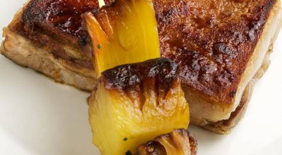
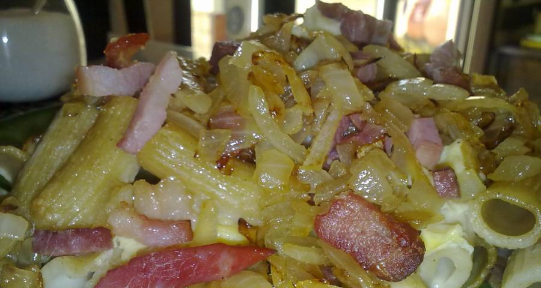
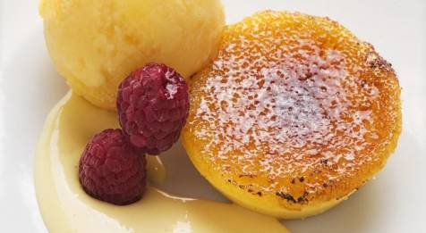
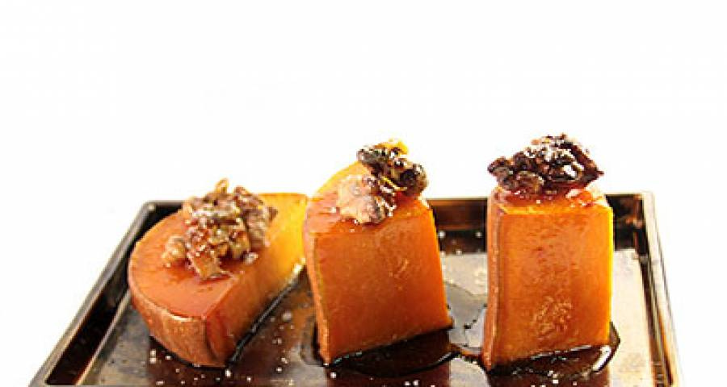

Cochinillo al horno con piña
Regalate un plato de carne nacional dulce y crujiente con esta deliciosa receta

Pasta al horno con jamón serrano y panceta ahumada
Disfruta de lo mejor de italia y España con esta jugosa delicia

Patatas con alioli
Acompaña este tradicional alimento gratinado con esta delicia valenciana

crema de naranja al horno
disfruta de la fruta con esta sabrosa receta que combina frio y calor

Tarta de queso y leche condensada
Regalate este dulce postre hecho con leche condensada

Calabaza al horno con nueces y miel
disfruta de una delicia naranja sana y natural